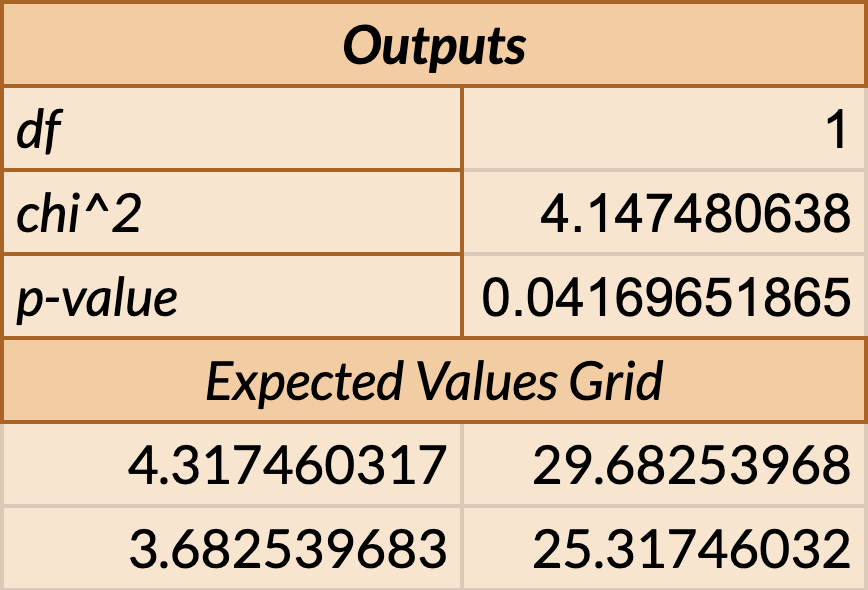
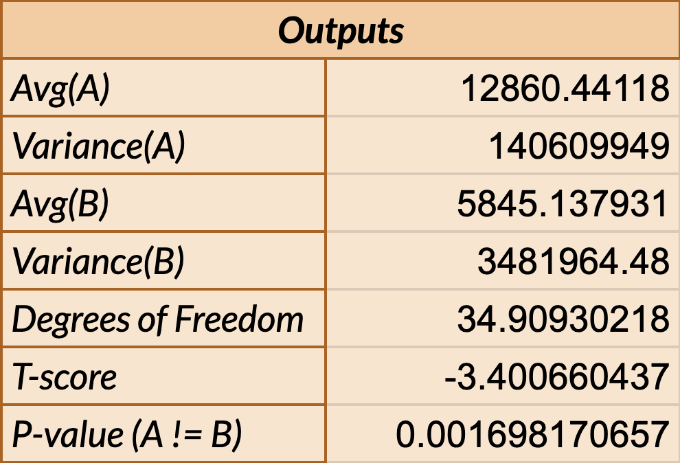
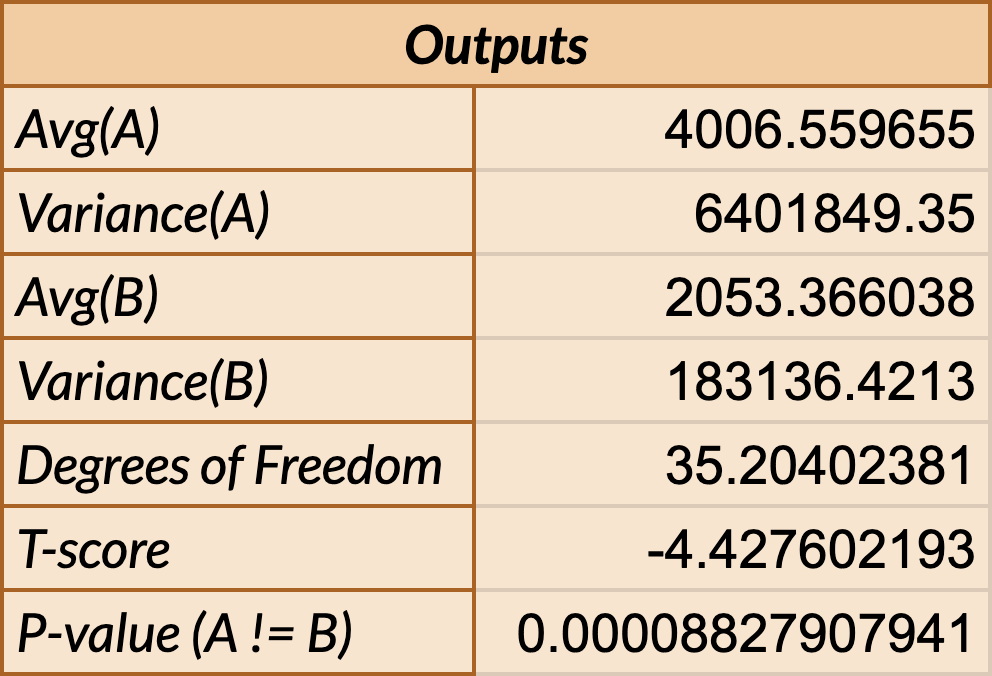

Project Overview
In this project, we perform an A/B test on two different UI designs for a health appointment booking webpage. Version A is the provided original version of the webpage while Version B is an “improved” version utilizing a number of UI design principles. Through this assignment, the question we are attempting to prove/disprove is whether the UI changes made in Version B resulted in a statistically significant difference in user interaction compared to Version A. Users are given a target interaction as a part of the A/B test and results are based on three chosen metrics from the collected data points. Utilizing A/B testing, we make useful observations on the effectiveness of one design over another through statistical tests and analyses. By quantitatively assessing the user interaction of the two versions based on metrics, we are able to understand and confidently infer how specific design choices an impact the overall usability and effectiveness of the product.
Webpage Modifications
Version A
Changes
1. Appointment Button Colors
Both Gray -> Gray & Black
2. Appointment Textual Hierarchy
Adjusted Font Size & Text Color
3. Organization of Appointments
Unordered -> Ordered chronologically by date
Version B
Chosen Metric
My metric of choice is mouse movement distance which is defined as the total distance (in pixels) of the user’s mouse movements.
Hypotheses and Predictions
Metric 1
Misclick Rate: the frequency with which users click something else on the page before finding the correct button for the task
| Null Hypothesis | There is no difference in the misclick rate between version A and version B of the webpage. |
|---|---|
| Prediction | We predict that we will reject the null hypothesis, indicating a statistically significant difference in the misclick rate between version A and version B of the webpage. Our expectation is based on the alternative hypothesis that version B, with its improvements in UI for the target interaction, will result in a lower misclick rate compared to version A. We justify this prediction by considering the UI modifications implemented in version B, such as in button color and textual hierarchy, that differentiate and present the desired user interaction more clearly. |
| Alternative Hypothesis | There is a difference in the misclick rate between version A and version B of the webpage, where version B will yield a lower misclick rate than version A. |
|---|---|
| Reasoning |
The alternative hypothesis is based on the following UI changes between versions A and B of the webpage:
|
Metric 2
Time on Page: time spent on the webpage for each user group
| Null Hypothesis | There is no difference in the time spent on page between version A and version B of the webpage. |
|---|---|
| Prediction | We predict that we will reject the null hypothesis, indicating a statistically significant difference in the time spent on page between version A and version B of the webpage. Our expectation is based on the alternative hypothesis that version B, with its improvements in UI for the target interaction, will result in less amount of time spent on page compared to version A. We justify this prediction by considering the UI modifications implemented in version B where appointments are organized in a way that is more chronologically-sound (visually and logically) than version A. |
| Alternative Hypothesis | There is a difference in the time spent on page between version A and version B of the webpage, where version B will result in less amount of time spent on page than version A. |
|---|---|
| Reasoning |
The alternative hypothesis is based on the following UI changes between versions A and B of the webpage:
|
Metric 3
Mouse Movement Distance: the total distance (in pixels) of the user’s mouse movements during their time on the webpage
| Null Hypothesis | There is no difference in mouse movement distance between version A and version B of the webpage. |
|---|---|
| Prediction | We predict that we will reject the null hypothesis, indicating a statistically significant difference in the total distance of the user’s mouse movements between version A and version B of the webpage. Our expectation is based on the alternative hypothesis that version B, with its improvements in UI for the target interaction, will result in less mouse movement distance compared to version A. We justify this prediction by considering the UI modifications implemented in version B where the intentional use and alignment of similar colors more clearly highlight horizontal relations and increase navigability compared to version A. |
| Alternative Hypothesis | There is a difference in mouse movement distance between version A and version B of the webpage, where version B will result in less mouse movement distance than version A. |
|---|---|
| Reasoning |
The alternative hypothesis is based on the following UI change between versions A and B of the webpage, along with previously mentioned changes:
|
Statistical Analysis
Metric 1
Misclick Rate (did_misclick)
Test: Chi-Squared Test
- Metric Type: A boolean flag (did_misclick), indicating if the user pushed a button external to the task.
- Outcome Variable: Categorical: TRUE or FALSE.
- Appropriate Test: The chi-squared test is suitable for comparing the frequencies of categorical outcomes.
- Objective: To determine if there is a significant difference in the frequency of did_misclick = TRUE between versions A & B.
Results:
- P-value = 0.04 Since p-value < significance level where 0.04 < 0.05, we reject the null hypothesis. Therefore, the difference between version A and B with respect to misclick rate is statistically significant.
- Degrees of freedom = 1 There is one independent comparison being made between the two versions of the webpage.
- Chi-Squared (χ²) = 4.147480638 A high chi-squared value indicates that the observed differences between groups are unlikely to occur by random chance. A chi-squared value of 4.147480638 suggests statistically significant results between the webpage versions.
Conclusion
-
We find statistically significant evidence that the alternative hypothesis is true where the p-value indicates a difference in the misclick rate on versions A & B of the webpage. As suggested by the expected values, the expected ratio of misclicks for version A are higher than that of version B. This indicates that the misclick rate on version B is lower than the misclick rate on version A.
Metric 2
Time on Page (time_on_page)
Test: Two-Tailed T-Test
- Metric Type: The total time (in milliseconds) that the user spent on the page.
- Outcome Variable: Continuous.
- Appropriate Test: The two-tailed t-test is suitable for comparing the means of two independent groups.
- Objective: To determine if there is a significant difference in the average time_on_page between versions A & B.
Results:
- P-value = 0.002 Since p-value < significance level where 0.002 < 0.05, we reject the null hypothesis. Therefore, the difference between version A and B with respect to time spent on page is statistically significant.
- Degrees of freedom = 34.90930218 There are about 35 independent comparisons being made between the two versions of the webpage. More degrees of freedom typically mean more reliable results.
- T-score = -3.400660437 The mean difference is 3.4 standard deviations away from the null hypothesis in the negative direction. This indicates a substantial difference in means.
Conclusion
-
We find statistically significant evidence that the alternative hypothesis is true where the p-value indicates a difference in the time spent on versions A & B of the webpage. As suggested by the t-score, the relationship between the mean difference in time spent and the null hypothesis is in the negative direction. This indicates that the average time spent on version B is less than the average time spent on version A.
Metric 3
Mouse Movement Distance (mouse_move_distance)
Test: Two-Tailed T-Test
- Metric Type: The total distance (in pixels) of the user’s mouse movements.
- Outcome Variable: Continuous.
- Appropriate Test: The two-tailed t-test is suitable for comparing the means of two independent groups.
- Objective: To determine if there is a significant difference in the average mouse_move_distance between versions A & B.
Results:
- P-value = 0.00009 Since p-value < significance level where 0.00009 < 0.05, we reject the null hypothesis. Therefore, the difference between version A and B with respect to time spent on page is statistically significant.
- Degrees of freedom = 35.2040238 There are about 35 independent comparisons being made between the two versions of the webpage. More degrees of freedom typically mean more reliable results.
- T-score = -4.427602193 The mean difference is 4.4 standard deviations away from the null hypothesis in the negative direction. This indicates a substantial difference in means.
Conclusion
-
We find statistically significant evidence that the alternative hypothesis is true where the p-value indicates a difference in the users' mouse movement distance on versions A & B of the webpage. As suggested by the t-score, the relationship between the mean mouse movement distance and the null hypothesis is in the negative direction. This indicates that the average mouse movement distance on version B is less than the mouse movement distance on version A.
Summary Statistics
We collected nine metrics for each version of the webpage. These data points quantify and categorize user interaction in relation to time and navigation that indicate different things about users’ journey of interaction with both versions of the webpage.
Based on the statistics from the three chosen metrics, it is likely that version B is better than version A.
We see that on average users spend 7015 more milliseconds on version A than on version B before completing the target
interaction, and analysis shows that it’s likely a true difference. The median time spent on page for Version A is 8526.5 milliseconds,
compared to 5466 milliseconds for Version B. Version A has a variance of 14060994 milliseconds, significantly higher than Version B's variance of 3481964.48 milliseconds.
These statistics suggest Version B offers a more efficient user experience, likely due to UI modifications that streamline navigation through chronological ordering of appointments by date.
We see that on average users move their mouse 1,953.2 pixels more on version A than on version B before completing the target interaction,
and analysis shows that it’s likely a true difference. The median mouse movement distance for Version A is 8526.5 pixels, while for Version B it is 5466 pixels.
Version A has a variance of 6401849 pixels, significantly different from Version B's variance of 183136 pixels. This indicates Version B's design
reduces mouse movement, likely due to aligned color choices that enforce clearer horizontal relationships between information and correspond buttons and vertical spacing.
We believe that the UI changes in button colors, textual hierarchy, and logical organization contribute to improved user experience in Version B,
as confidently supported by our A/B testing results.